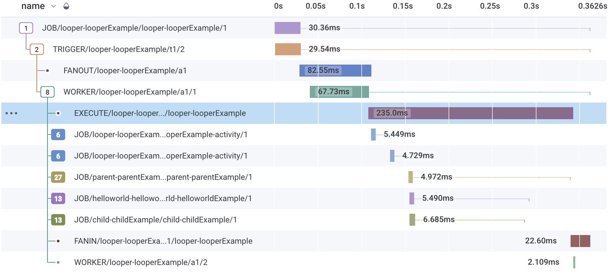

@hotmeshio/hotmesh
HotMesh

HotMesh offers "Temporal Your Way"—providing the power of orchestration platforms like Temporal.io in a flexible, decentralized manner. Replace everything with robust Queues and Routers...even the app server.
Note: This is a beta release and currently focuses on TypeScript/Redis.
Features
- Temporal Your Way: Orchestrate your microservices using message queues and routers, without the need for a central server.
- Pluggable Middleware: Mix and match technologies through a standard interface. Currently supporting Redis/ValKey/Dragonfly/KVRocks, with Postgres, ElasticSearch, and NATS coming next.
- Decentralized Orchestration: Build a resilient architecture with decentralized queues and routers.
- Linear Scalability: Scale your application by scaling the database.
- Real-Time Analytics: Gain insights into your workflows with real-time analytics.
Install
npm install @hotmeshio/hotmesh
You have a Redis instance? Good. You're ready to go.
Learn
📄 Docs | 💼 Sample Projects | 🎥 Intro (3m) | 🎥 Transactional Workflow (9m)
MeshCall | Connect Your Services
MeshCall connects your services as a singular mesh, exposing functions as idempotent endpoints. Function responses are cacheable and functions can even run as idempotent cron jobs. Make blazing fast interservice calls that return in milliseconds without the overhead of HTTP.
Run an idempotent cron job [more]
Run a Cron
This example demonstrates an idempotent cron that runs daily at midnight. The id makes each cron job unique and ensures that only one instance runs, despite repeated invocations. The cron method returns false if a workflow is already running with the same id.
Optionally set a delay and/or set maxCycles to limit the number of cycles. The interval can be any human-readable time format (e.g., 1 day, 2 hours, 30 minutes, etc) or a standard cron expression.
-
Define the cron function.
//cron.ts
import { MeshCall } from '@hotmeshio/hotmesh';
import * as Redis from 'redis';
export const runMyCron = async (id: string, interval = '0 0 * * *'): Promise<boolean> => {
return await MeshCall.cron({
topic: 'my.cron.function',
redis: {
class: Redis,
options: { url: 'redis://:key_admin@redis:6379' }
},
callback: async () => {
//your code here...
},
options: { id, interval, maxCycles: 24 }
});
}; -
Call
runMyCronat server startup (or call as needed to run multiple crons).//server.ts
import { runMyCron } from './cron';
runMyCron('myNightlyCron123');
Interrupt a cron job [more]
Interrupt a Cron
This example demonstrates how to cancel a running cron job.
- Use the same
idandtopicthat were used to create the cron to cancel it.import { MeshCall } from '@hotmeshio/hotmesh';
import * as Redis from 'redis';
MeshCall.interrupt({
topic: 'my.cron.function',
redis: {
class: Redis,
options: { url: 'redis://:key_admin@redis:6379' }
},
options: { id: 'myNightlyCron123' }
});
Call any function in any service [more]
Call a Function
Make blazing fast interservice calls that behave like HTTP but without the setup and performance overhead. This example demonstrates how to connect a function to the mesh and call it from anywhere on the network.
-
Call
MeshCall.connectand provide atopicto uniquely identify the function.//myFunctionWrapper.ts
import { MeshCall, Types } from '@hotmeshio/hotmesh';
import * as Redis from 'redis';
export const connectMyFunction = async () => {
return await MeshCall.connect({
topic: 'my.demo.function',
redis: {
class: Redis,
options: { url: 'redis://:key_admin@redis:6379' }
},
callback: async (input: string) => {
//your code goes here; response must be JSON serializable
return { hello: input }
},
});
}; -
Call
connectMyFunctionat server startup to connect your function to the mesh.//server.ts
import { connectMyFunction } from './myFunctionWrapper';
connectMyFunction(); -
Call your function from anywhere on the network (or even from the same service). Send any payload as long as it's JSON serializable.
import { MeshCall } from '@hotmeshio/hotmesh';
import * as Redis from 'redis';
const result = await MeshCall.exec({
topic: 'my.demo.function',
args: ['something'],
redis: {
class: Redis,
options: { url: 'redis://:key_admin@redis:6379' }
},
}); //returns `{ hello: 'something'}`
Call and cache a function [more]
Cache a Function
Redis is great for unburdening stressed services. This solution builds upon the previous example, caching the response. The linked function will only be re/called when the cached result expires. Everything remains the same, except the caller which specifies an id and ttl.
-
Make the call from another service (or even the same service). Include an
idandttlto cache the result for the specified duration.import { MeshCall } from '@hotmeshio/hotmesh';
import * as Redis from 'redis';
const result = await MeshCall.exec({
topic: 'my.demo.function',
args: ['anything'],
redis: {
class: Redis,
options: { url: 'redis://:key_admin@redis:6379' }
},
options: { id: 'myid123', ttl: '15 minutes' },
}); //returns `{ hello: 'anything'}` -
Flush the cache at any time, using the same
topicand cacheid.import { MeshCall } from '@hotmeshio/hotmesh';
import * as Redis from 'redis';
await MeshCall.flush({
topic: 'my.demo.function',
redis: {
class: Redis,
options: { url: 'redis://:key_admin@redis:6379' }
},
options: { id: 'myid123' },
});
MeshFlow | Transactional Workflow
MeshFlow is a drop-in replacement for Temporal.io. If you need to orchestrate your functions as durable workflows, MeshFlow combines the popular Temporal SDK with Redis' in-memory execution speed.
Orchestrate unpredictable activities [more]
Proxy Activities
When an endpoint is unpredictable, use proxyActivities. HotMesh will retry as necessary until the call succeeds. This example demonstrates a workflow that greets a user in both English and Spanish. Even though both activities throw random errors, the workflow always returns a successful result.
-
Start by defining activities. Note how each throws an error 50% of the time.
//activities.ts
export async function greet(name: string): Promise<string> {
if (Math.random() > 0.5) throw new Error('Random error');
return `Hello, ${name}!`;
}
export async function saludar(nombre: string): Promise<string> {
if (Math.random() > 0.5) throw new Error('Random error');
return `¡Hola, ${nombre}!`;
} -
Define the workflow logic. Include conditional branching, loops, etc to control activity execution. It's vanilla JavaScript written in your own coding style. The only requirement is to use
proxyActivities, ensuring your activities are executed with HotMesh's durability wrapper.//workflows.ts
import { MeshFlow } from '@hotmeshio/hotmesh';
import * as activities from './activities';
const { greet, saludar } = MeshFlow.workflow
.proxyActivities<typeof activities>({
activities
});
export async function example(name: string): Promise<[string, string]> {
return Promise.all([
greet(name),
saludar(name)
]);
} -
Instance a HotMesh client to invoke the workflow.
//client.ts
import { MeshFlow, HotMesh } from '@hotmeshio/hotmesh';
import Redis from 'ioredis';
async function run(): Promise<string> {
const client = new MeshFlow.Client({
connection: {
class: Redis,
options: { host: 'redis', port: 6379 }
}
});
const handle = await client.workflow.start<[string,string]>({
args: ['HotMesh'],
taskQueue: 'default',
workflowName: 'example',
workflowId: HotMesh.guid()
});
return await handle.result();
//returns ['Hello HotMesh', '¡Hola, HotMesh!']
} -
Finally, create a worker and link the workflow function. Workers listen for tasks on their assigned Redis stream and invoke the workflow function each time they receive an event.
//worker.ts
import { MeshFlow } from '@hotmeshio/hotmesh';
import Redis from 'ioredis';
import * as workflows from './workflows';
async function run() {
const worker = await MeshFlow.Worker.create({
connection: {
class: Redis,
options: { host: 'redis', port: 6379 },
},
taskQueue: 'default',
workflow: workflows.example,
});
await worker.run();
}
Pause and wait for a signal [more]
Wait for Signal
Pause a function and only awaken when a matching signal is received from the outide.
-
Define the workflow logic. This one waits for the
my-sig-nalsignal, returning the signal payload ({ hello: 'world' }) when it eventually arrives. Interleave additional logic to meet your use case.//waitForWorkflow.ts
import { MeshFlow } from '@hotmeshio/hotmesh';
export async function waitForExample(): Promise<{hello: string}> {
return await MeshFlow.workflow.waitFor<{hello: string}>('my-sig-nal');
//continue processing, use the payload, etc...
} -
Instance a HotMesh client and start a workflow. Use a custom workflow ID (
myWorkflow123).//client.ts
import { MeshFlow, HotMesh } from '@hotmeshio/hotmesh';
import Redis from 'ioredis';
async function run(): Promise<string> {
const client = new MeshFlow.Client({
connection: {
class: Redis,
options: { host: 'redis', port: 6379 }
}
});
//start a workflow; it will immediately pause
await client.workflow.start({
args: ['HotMesh'],
taskQueue: 'default',
workflowName: 'waitForExample',
workflowId: 'myWorkflow123',
await: false,
});
} -
Create a worker and link the
waitForExampleworkflow function.//worker.ts
import { MeshFlow } from '@hotmeshio/hotmesh';
import Redis from 'ioredis';
import * as workflows from './waitForWorkflow';
async function run() {
const worker = await MeshFlow.Worker.create({
connection: {
class: Redis,
options: { host: 'redis', port: 6379 },
},
taskQueue: 'default',
workflow: workflows.waitForExample,
});
await worker.run();
} -
Send a signal to awaken the paused function; await the function result.
import { MeshFlow } from '@hotmeshio/hotmesh';
import * as Redis from Redis;
const client = new MeshFlow.Client({
connection: {
class: Redis,
options: { host: 'redis', port: 6379 }
}
});
//awaken the function by sending a signal
await client.signal('my-sig-nal', { hello: 'world' });
//get the workflow handle and await the result
const handle = await client.getHandle({
taskQueue: 'default',
workflowId: 'myWorkflow123'
});
const result = await handle.result();
//returns { hello: 'world' }
Wait for multiple signals (collation) [more]
Collate Multiple Signals
Use a standard Promise to collate and cache multiple signals. HotMesh will only awaken once all signals have arrived. HotMesh will track up to 25 concurrent signals.
-
Update the workflow logic to await two signals using a promise:
my-sig-nal-1andmy-sig-nal-2. Add additional logic to meet your use case.//waitForWorkflows.ts
import { MeshFlow } from '@hotmeshio/hotmesh';
export async function waitForExample(): Promise<[boolean, number]> {
const [s1, s2] = await Promise.all([
Meshflow.workflow.waitFor<boolean>('my-sig-nal-1'),
Meshflow.workflow.waitFor<number>('my-sig-nal-2')
]);
//do something with the signal payloads (s1, s2)
return [s1, s2];
} -
Send two signals to awaken the paused function.
import { MeshFlow } from '@hotmeshio/hotmesh';
import * as Redis from Redis;
const client = new MeshFlow.Client({
connection: {
class: Redis,
options: { host: 'redis', port: 6379 }
}
});
//send 2 signals to awaken the function; order is unimportant
await client.signal('my-sig-nal-2', 12345);
await client.signal('my-sig-nal-1', true);
//get the workflow handle and await the collated result
const handle = await client.getHandle({
taskQueue: 'default',
workflowId: 'myWorkflow123'
});
const result = await handle.result();
//returns [true, 12345]
Create a recurring, cyclical workflow [more]
Cyclical Workflow
This example calls an activity and then sleeps for a week. It runs indefinitely until it's manually stopped. It takes advantage of durable execution and can safely sleep for months or years.
Container restarts have no impact on actively executing workflows as all state is retained in Redis.
-
Define the workflow logic. This one calls a legacy
statusDiagnosticfunction once a week.//recurringWorkflow.ts
import { MeshFlow } from '@hotmeshio/hotmesh';
import * as activities from './activities';
const { statusDiagnostic } = MeshFlow.workflow
.proxyActivities<typeof activities>({
activities
});
export async function recurringExample(someValue: number): Promise<void> {
do {
await statusDiagnostic(someValue);
} while (await MeshFlow.workflow.sleepFor('1 week'));
} -
Instance a HotMesh client and start a workflow. Assign a custom workflow ID (e.g.,
myRecurring123) if the workflow should be idempotent.//client.ts
import { MeshFlow, HotMesh } from '@hotmeshio/hotmesh';
import Redis from 'ioredis';
async function run(): Promise<string> {
const client = new MeshFlow.Client({
connection: {
class: Redis,
options: { host: 'redis', port: 6379 }
}
});
//start a workflow; it will immediately pause
await client.workflow.start({
args: [55],
taskQueue: 'default',
workflowName: 'recurringExample',
workflowId: 'myRecurring123',
await: false,
});
} -
Create a worker and link the
recurringExampleworkflow function.//worker.ts
import { MeshFlow } from '@hotmeshio/hotmesh';
import Redis from 'ioredis';
import * as workflows from './recurringWorkflow';
async function run() {
const worker = await MeshFlow.Worker.create({
connection: {
class: Redis,
options: { host: 'redis', port: 6379 },
},
taskQueue: 'default',
workflow: workflows.recurringExample,
});
await worker.run();
} -
Cancel the recurring workflow (
myRecurring123) by callinginterrupt.import { MeshFlow } from '@hotmeshio/hotmesh';
import * as Redis from Redis;
const client = new MeshFlow.Client({
connection: {
class: Redis,
options: { host: 'redis', port: 6379 }
}
});
//get the workflow handle and interrupt it
const handle = await client.getHandle({
taskQueue: 'default',
workflowId: 'myRecurring123'
});
const result = await handle.interrupt();
MeshData | Transactional Analytics
MeshData extends the MeshFlow service, combining data record concepts and transactional workflow principles into a single Operational Data Layer.
Deployments with the Redis FT.SEARCH module enabled can use the MeshData module to merge OLTP and OLAP operations into a hybrid transactional/analytics (HTAP) system.
For those Redis deployments without the FT.SEARCH module, it's still useful to define a workflow schema. The MeshData class provides convenience methods for reading and writing hash field data to a workflow record (e.g., get, del, and incr).
Create a search index [more]
Workflow Data Indexes
This example demonstrates how to define a schema and deploy an index for a 'user' entity type.
-
Define the schema for the
userentity. This one includes the 3 formats supported by the FT.SEARCH module:TEXT,TAGandNUMERIC.//schema.ts
export const schema: Types.WorkflowSearchOptions = {
schema: {
id: { type: 'TAG', sortable: false },
first: { type: 'TEXT', sortable: false, nostem: true },
active: { type: 'TAG', sortable: false },
created: { type: 'NUMERIC', sortable: true },
},
index: 'user',
prefix: ['user'],
}; -
Create the Redis index upon server startup. This one initializes the 'user' index in Redis, using the schema defined in the previous step. It's OK to call
createSearchIndexmultiple times; it will only create the index if it doesn't already exist.//server.ts
import { MeshData } from '@hotmeshio/hotmesh';
import * as Redis from 'redis';
import { schema } from './schema';
const meshData = new MeshData(
Redis,
{ url: 'redis://:key_admin@redis:6379' },
schema,
);
await meshData.createSearchIndex('user', { namespace: 'meshdata' });
Create an indexed, searchable record [more]
Workflow Record Data
This example demonstrates how to create a 'user' workflow backed by the searchable schema from the prior example.
-
Call MeshData
connectto initialize a 'user' entity worker. It references a target worker function which will run the workflow. Data fields that are documented in the schema (likeactive) will be automatically indexed when set on the workflow record.//connect.ts
import { MeshData } from '@hotmeshio/hotmesh';
import * as Redis from 'redis';
import { schema } from './schema';
export const connectUserWorker = async (): Promise<void> => {
const meshData = new MeshData(
Redis,
{ url: 'redis://:key_admin@redis:6379' },
schema,
);
await meshData.connect({
entity: 'user',
target: async function(name: string): Promise<string> {
//add custom, searchable data (`active`) and return
const search = await MeshData.workflow.search();
await search.set('active', 'yes');
return `Welcome, ${name}.`;
},
options: { namespace: 'meshdata' },
});
} -
Wire up the worker at server startup, so it's ready to process incoming requests.
//server.ts
import { connectUserWorker } from './connect';
await connectUserWorker(); -
Call MeshData
execto create a 'user' workflow. Searchable data can be set throughout the workflow's lifecycle. This one initializes the workflow with 3 data fields:id,nameandtimestamp. An additional data field (active) is set within the workflow function in order to demonstrate both mechanisms for reading/writing data to a workflow.//exec.ts
import { MeshData } from '@hotmeshio/hotmesh';
import * as Redis from 'redis';
const meshData = new MeshData(
Redis,
{ url: 'redis://:key_admin@redis:6379' },
schema,
);
export const newUser = async (id: string, name: string): Promise<string> => {
const response = await meshData.exec({
entity: 'user',
args: [name],
options: {
ttl: 'infinity',
id,
search: {
data: { id, name, timestamp: Date.now() }
},
namespace: 'meshdata',
},
});
return response;
}; -
Call the
newUserfunction to create a searchable 'user' record.import { newUser } from './exec';
const response = await newUser('jim123', 'James');
Fetch record data [more]
Read Record Data
This example demonstrates how to read data fields directly from a workflow.
-
Read data fields directly from the jimbo123 'user' record.
//read.ts
import { MeshData } from '@hotmeshio/hotmesh';
import * as Redis from 'redis';
import { schema } from './schema';
const meshData = new MeshData(
Redis,
{ url: 'redis://:key_admin@redis:6379' },
schema,
);
const data = await meshData.get(
'user',
'jimbo123',
{
fields: ['id', 'name', 'timestamp', 'active'],
namespace: 'meshdata'
},
);
Search record data [more]
Query Record Data
This example demonstrates how to search for those workflows where a given condition exists in the data. This one searches for active users. NOTE: The native Redis FT.SEARCH syntax is supported. The JSON abstraction shown here is a convenience method for straight-forward, one-dimensional queries.
-
Search for active users (where the value of the
activefield isyes).//read.ts
import { MeshData } from '@hotmeshio/hotmesh';
import * as Redis from 'redis';
import { schema } from './schema';
const meshData = new MeshData(
Redis,
{ url: 'redis://:key_admin@redis:6379' },
schema,
);
const results = await meshData.findWhere('user', {
query: [{ field: 'active', is: '=', value: 'yes' }],
limit: { start: 0, size: 100 },
return: ['id', 'name', 'timestamp', 'active']
});
Visualize | OpenTelemetry
HotMesh's telemetry output provides unmatched insight into long-running, x-service transactions. Add your Honeycomb credentials to any project using HotMesh and HotMesh will emit the full OpenTelemetry execution tree organized as a DAG.
Visualize | HotMesh Dashboard
The HotMesh dashboard provides a detailed overview of all running workflows. An LLM is included to simplify querying and analyzing workflow data for those deployments that include the Redis FT.SEARCH module.

Visualize | RedisInsight
View commands, streams, data, CPU, load, etc using the RedisInsight data browser.

Samples
Refer to the hotmeshio/samples-typescript Git repo for tutorials and instructions on deploying the HotMesh Dashboard.
Advanced
For more advanced topics, including details on the underlying modeling and design system (HotMesh) refer to the Advanced README.